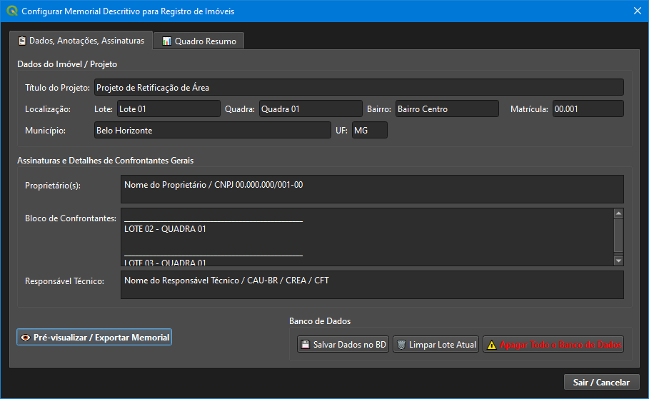
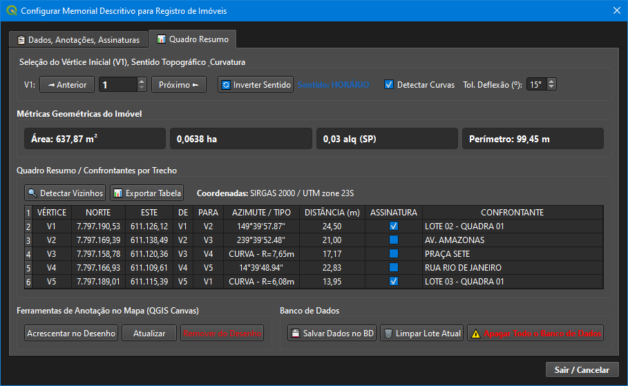
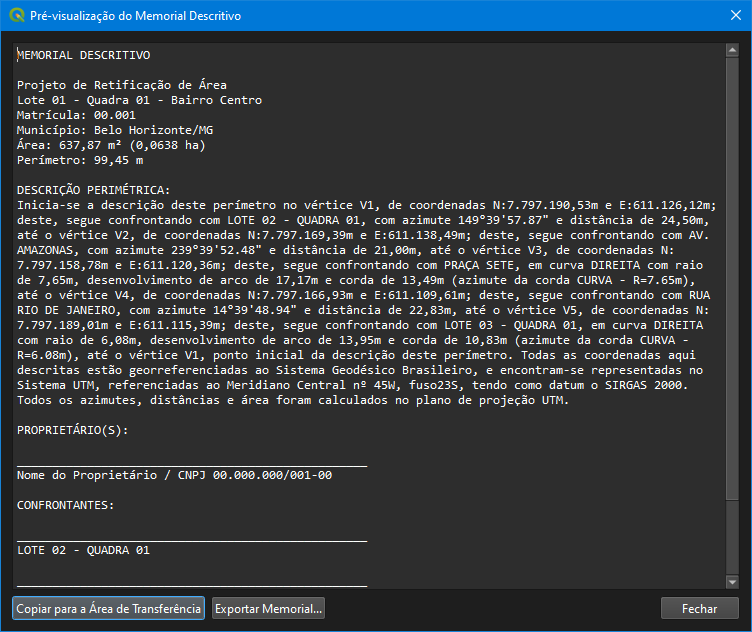
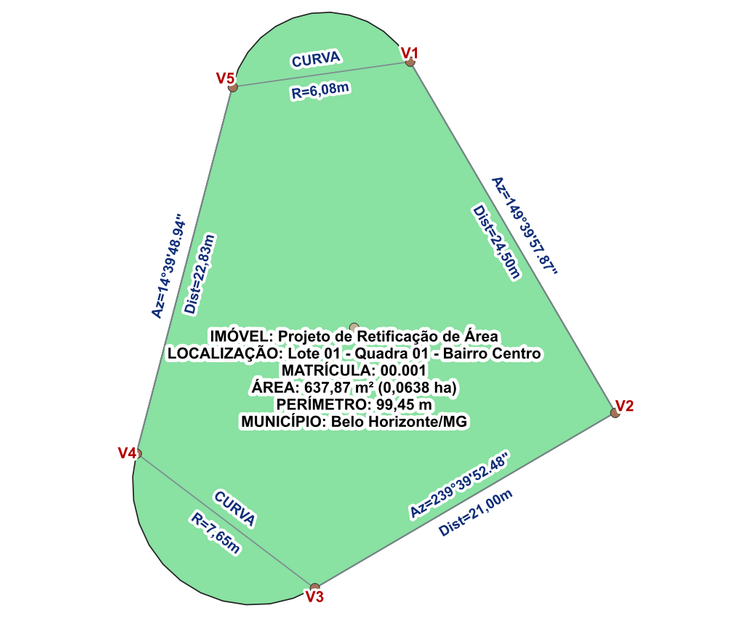

ARK-Z ARQUITETURA LTDA FERRAMENTAS
GEOSPATIAIS & CAD/GIS COMPATÍVEL
COM QGIS 4.0
Gerador de Memorial Descritivo · Guia do Usuário
O Gerador de Memorial Descritivo é uma solução
profissional para o QGIS focada no processamento topográfico de
geometrias vetoriais, ordenação perimetral dinâmica (definição do V1 e
inversão de sentido com destaque no mapa), detecção avançada de curvas
com cálculo de elementos geométricos, métricas de área/perímetro,
geração automatizada de anotações no Canvas e exportação de memoriais e
tabelas padronizados para Registro de Imóveis.
📸 Interface da Ferramenta e Organização em Abas
A ferramenta possui uma interface estruturada em duas abas principais,
além da janela dedicada para pré-visualização e exportação do texto
final:

Figura 1: Aba "Dados, Anotações,
Assinaturas"
Preenchimento dos metadados do imóvel/projeto (Título, Lote, Quadra,
Matrícula, Município), Proprietários, Bloco de Confrontantes e
Responsável Técnico, além do botão de ação para Pré-visualização.

Figura 2: Aba "Quadro Resumo"
Seleção do Vértice Inicial (V1), Inversão de Sentido, Detecção de
Curvas, Métricas Geométricas, Tabela de Trechos/Confrontantes,
Anotações no Canvas e Persistência no Banco de Dados.

Figura 3: Janela
"Pré-visualização do Memorial Descritivo"
Visualização narrativa em tempo real com área, perímetro, azimutes,
distâncias, curvas, proprietários, confrontantes e botões para cópia
rápida e exportação.

Figura 4: Anotações Automáticas
no QGIS Canvas
Vértices numerados (V1 a V5), rótulos de Azimute/Distância
orientados nas divisas, identificação de Curvas (Raio) e bloco
informativo central no imóvel.
🌟 Recursos e Estrutura Funcional
Navegação dinâmica do
Ponto V1 com feedback gráfico em tempo real (QgsRubberBand). Inversão de Sentido Topográfico (Horário /
Anti-Horário) instantânea. Detecção
automática de arcos/curvas perimetrais com calculador de Raio, Arco,
Corda e Sentido de Giro. Métricas
automáticas em M², Hectares (ha), Alqueire SP e Perímetro linear (m).
Pesquisa e preenchimento automático de
vizinhos via análise espacial (Botão "Detectar Vizinhos BD"). Geração de camadas vetoriais de anotação e rótulos
no QGIS Canvas (Vértices, Azimute/Distância e Confrontantes). Controle de Assinatura por Trecho com
sincronização dinâmica no bloco de rodapé. Tabela
compacta com alinhamento profissional e destaque interativo do trecho
no mapa ao selecionar. Exportação de
dados tabulares em formato estruturado CSV / XLSX. Persistência
local em banco SQLite vinculada ao ID único da feição (feature_id).
Ações de manutenção: Limpeza do lote ativo e
reinicialização completa do BD. Diálogo
de Pré-visualização com exportação multipadrão (TXT, DOC, HTML) e
cópia rápida.
📑 Detalhamento da Estrutura das Abas
1. Aba "Dados, Anotações, Assinaturas"
A primeira aba concentra todas as informações jurídicas, cadastrais e
administrativas necessárias para qualificação formal do documento
perante os Cartórios de Registro de Imóveis:
- Dados do Imóvel / Projeto:
- Título do Projeto: Nome técnico da intervenção
(ex: Projeto de Retificação de Área).
- Descrição Lote/Quadra: Endereçamento cadastral
completo (ex: Lote 01 da Quadra 01 do Bairro Centro).
- Matrícula: Número do registro imobiliário (ex:
00.001).
- Município e UF: Jurisdição política da
propriedade (ex: Belo Horizonte / MG).
- Assinaturas e Detalhes de Confrontantes Gerais:
- Proprietário(s): Razão social ou nome civil com
documento oficial (CPF/CNPJ).
- Bloco de Confrontantes: Lista dos confrontantes
consolidados para o bloco final de assinaturas e anuências da
planta/memorial.
- Responsável Técnico: Profissional habilitado e
número do conselho de classe (CREA / CAU / CFT).
- Ação de Pré-visualização: Botão principal
👁️
Pré-visualizar / Exportar Memorial para geração imediata do
texto narrativo.
2. Aba "Quadro Resumo"
A segunda aba reúne os controles topográficos de geometria, o quadro
tabular de trechos, ferramentas de anotação gráfica e controle de banco
de dados:
- Seleção do Vértice Inicial (V1), Sentido Topográfico e
Curvatura:
- Navegação V1: Permite alternar sequencialmente
o ponto de amarração inicial sem modificar o vetor original.
- Inverter Sentido: Troca instantânea do fluxo de
navegação entre HORÁRIO e ANTI-HORÁRIO.
- Detectar Curvas e Tol. Deflexão (°):
Identificação automática de concordâncias circulares e cálculo de
raio/arco/corda com tolerância ajustável.
- Métricas Geométricas do Imóvel: Exibição dinâmica
da Área em m², Hectares (ha), Alqueire (SP) e Perímetro Total em
metros.
- Quadro Resumo / Confrontantes por Trecho:
- Tabela completa com Vértice, Coordenadas (Norte/Este - SIRGAS
2000 UTM 23S), De/Para, Azimute/Tipo, Distância (m), Checkbox de
Assinatura e Campo Edital de Confrontante por trecho.
- Botão
🔍 Detectar Vizinhos: Análise espacial
contra a base cadastral para auto-preenchimento dos confrontantes.
- Botão
📊 Exportar Tabela: Exportação da planilha
estruturada.
- Ferramentas de Anotação no Mapa (QGIS Canvas):
Acrescentar no Desenho: Gera o grupo de camadas de
anotação gráfica (Vértices, Rótulos, Cotas e Bloco do Imóvel).Atualizar: Atualiza as anotações no mapa mantendo a
sincronia com as alterações da tabela.Remover do Desenho: Limpa os elementos de anotação
do projeto QGIS.
- Gerenciamento de Banco de Dados:
💾 Salvar Dados no BD: Armazena as configurações
locais no SQLite por feature_id.🗑️ Limpar Lote Atual: Remove as informações salvas
apenas do lote ativo.⚠️ Apagar Todo o Banco de Dados: Exclui
permanentemente todos os registros do banco SQLite.
📋 Modelo de Tabela Exportada (Quadro Resumo)
Exemplo da tabela tabular processada na Aba Quadro Resumo:
| VÉRTICE |
COORDENADA NORTE |
COORDENADA ESTE |
DE |
PARA |
AZIMUTE / TIPO |
DISTÂNCIA (m) |
ASSINATURA |
CONFRONTANTE |
| V1 |
7.797.190,53 |
611.126,12 |
V1 |
V2 |
149°39'57.87" |
24,50 |
[X] |
LOTE 02 - QUADRA 01 |
| V2 |
7.797.169,39 |
611.138,49 |
V2 |
V3 |
239°39'52.48" |
21,00 |
[ ] |
AV. AMAZONAS |
| V3 |
7.797.158,78 |
611.120,36 |
V3 |
V4 |
CURVA - R=7,65m |
17,17 |
[ ] |
PRAÇA SETE |
| V4 |
7.797.166,93 |
611.109,61 |
V4 |
V5 |
14°39'48.94" |
22,83 |
[ ] |
RUA RIO DE JANEIRO |
| V5 |
7.797.189,01 |
611.115,39 |
V5 |
V1 |
CURVA - R=6,08m |
13,95 |
[X] |
LOTE 03 - QUADRA 01 |
📝 Modelo de Memorial Descritivo Gerado
Exemplo de saída narrativa formatada para cópia ou exportação:
MEMORIAL DESCRITIVO
Projeto de Retificação de Área
Lote 01 - Quadra 01 - Bairro Centro
Matrícula: 00.001
Município: Belo Horizonte/MG
Área: 637,87 m² (0,0638 ha)
Perímetro: 99,45 m
DESCRIÇÃO PERIMÉTRICA:
Inicia-se a descrição deste perímetro no vértice V1, de coordenadas N:7.797.190,53m e E:611.126,12m; deste, segue confrontando com LOTE 02 - QUADRA 01, com azimute 149°39'57.87" e distância de 24,50m, até o vértice V2, de coordenadas N:7.797.169,39m e E:611.138,49m; deste, segue confrontando com AV. AMAZONAS, com azimute 239°39'52.48" e distância de 21,00m, até o vértice V3, de coordenadas N:7.797.158,78m e E:611.120,36m; deste, segue confrontando com PRAÇA SETE, em curva DIREITA com raio de 7,65m, desenvolvimento de arco de 17,17m e corda de 13,49m (azimute da corda CURVA - R=7.65m), até o vértice V4, de coordenadas N:7.797.166,93m e E:611.109,61m; deste, segue confrontando com RUA RIO DE JANEIRO, com azimute 14°39'48.94" e distância de 22,83m, até o vértice V5, de coordenadas N:7.797.189,01m e E:611.115,39m; deste, segue confrontando com LOTE 03 - QUADRA 01, em curva DIREITA com raio de 6,08m, desenvolvimento de arco de 13,95m e corda de 10,83m (azimute da corda CURVA - R=6.08m), até o vértice V1, ponto inicial da descrição deste perímetro. Todas as coordenadas aqui descritas estão georreferenciadas ao Sistema Geodésico Brasileiro, e encontram-se representadas no Sistema UTM, referenciadas ao Meridiano Central nº 45W, fuso23S, tendo como datum o SIRGAS 2000. Todos os azimutes, distâncias e área foram calculados no plano de projeção UTM.
PROPRIETÁRIO(S):
__________________________________________________
Nome do Proprietário / CNPJ 00.000.000/001-00
CONFRONTANTES:
__________________________________________________
LOTE 02 - QUADRA 01
__________________________________________________
LOTE 03 - QUADRA 01
RESPONSÁVEL TÉCNICO:
__________________________________________________
Nome do Responsável Técnico / CAU-BR / CREA / CFT
📄 Licença
© 2026 ARK-Z ARQUITETURA LTDA — Módulo Memorial Descritivo
Versão 1.0.0 | Compatível com QGIS 4.0